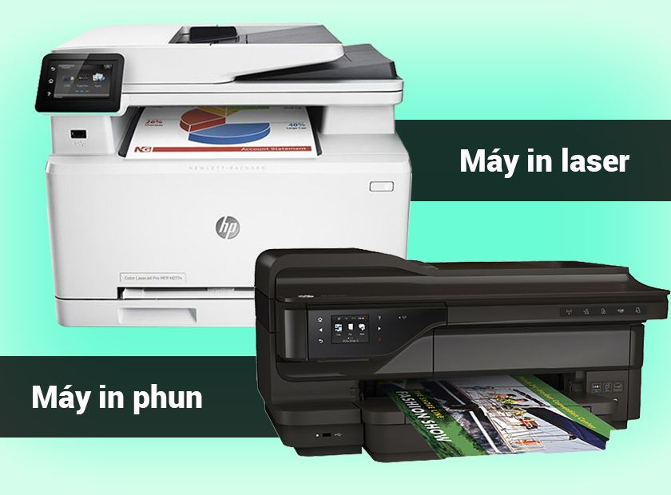
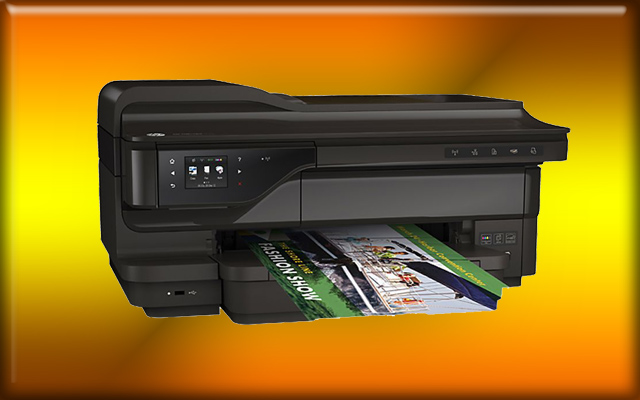
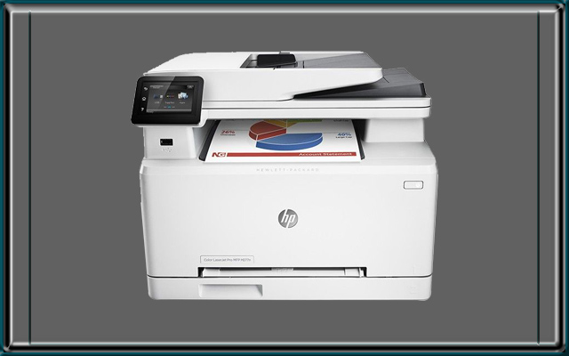

Những ưu nhược điểm của máy in laser và máy in phun

Máy in phun tạo ra một bức ảnh kỹ thuật số bằng cách rải các giọt mực lên giấy in. Máy in laser tạo ra hình ảnh kỹ thuật số bằng cách quét một chùm tia laser lên trên các bộ phận nhận ánh sáng.Như vậy giải pháp nào tốt hơn? Điều đó còn phụ thuộc nhiều yếu tố. Chúng tôi đã cân nhắc một số ưu và khuyết điểm của máy in phun so với máy in laser để giúp bạn tìm ra được giải pháp nào là hoàn hảo cho nhu cầu của bạn.
Nhờ tính sẵn có, dễ dàng tìm mua, chi phí ban đầu thấp, hầu hết các hộ gia đình hiện này sử dụng máy in phun cho nhu cầu in ấn hằng ngày của họ. Nhưng hiện nay máy in laser, thậm chí là các mẫu máy in laser màu cũng đang có mức giá khá tốt với kích cỡ phù hợp cho văn phòng nhỏ hoặc hộ gia đình sử dụng. Để tìm hiểu xem bạn có nên chuyển sang sử dụng máy in laser không, bạn cần thêm một bước phân tích mức độ sử dụng máy in của mình.

Ưu nhược điểm của dòng máy in phun
Ưu điểm máy in Phun:
– Khả năng in những tài liệu, hình ảnh đẹp, ngay cả những file hình ảnh nặng. Máy in phun có khả năng pha trộn màu sắc tốt, mượt mà hơn so với máy in laser
– Chi phí ban đầu của máy in phun khá thấp. Giá mua máy in phun rẻ hơn so với máy in laser màu, giá thành một hộp mực in phun cũng rẻ hơn.
– Máy in phun có thể in trên nhiều loại giấy khác nhau, giấy in ảnh bóng, một số chất liệu giấy văn phòng phẩm và ngay cả một vài chất liệu vải.
– Hầu hết các máy in phun không cần thời gian khởi động trước in khi in.
– Máy in phun có xu hướng nhỏ, gọn, nhẹ hơn và dễ bảo trì hơn máy in laser.
Nhược điểm máy in Phun:
– Mực in phun đắt tiền.
– Bản chất của mực in phun là chất lỏng, do đó bản in sẽ dễ bị hư, và mờ dần nếu gặp môi trường nước.
– Hộp mực máy in phun cần được làm sạch thường xuyên. Mặc dù cũng có chức năng tự động bảo dưỡng, nhưng lại tốn rất nhiều mực.
– Tốc độ máy in phun đang ngày càng cải tiến nhanh hơn, nhưng vẫn còn rất chậm so với tốc độ của máy in laser. In ấn với khối lượng cao đang là một thách thức lớn đối với máy in phun.
– Một số máy in phun nếu in trên giấy văn phòng trơn có thể tạo ra những bản in bị xám mờ. Khay giấy của máy in phun cho nhu cầu gia đình hoặc văn phòng nhỏ chỉ chưa 1được từ 50-100 tờ. Khay giấy đầu ra hầu như không có. Điều này có thể là mộ vấn đề nếu bạn cần in rất nhiều.

Ưu nhược điểm dòng máy in laser
Ưu điểm máy in laser:
– Máy in laser có thể in nhanh hơn máy in phun. Cũng không quan trọng lắm nếu bạn chỉ in một vài trang ở một thời điểm. Nhưng khi in với khối lượng cao bạn sẽ nhận thấy sự khác biệt rất rõ.
– Máy in laser tạo ra văn bản màu đen hoàn hảo. nếu công việc của bạn chủ yếu là in văn bản, các bản in đồ họa không được in thường xuyên, máy in laser là một lựa chọn. Máy in laser cũng xử lý các phông chữ nhỏ và đường kẻ nhỏ tốt hơn nhiều so với máy in phun.
– Máy in laser được chuẩn bị tốt hơn để xử lý các lệnh in có khối lượng lớn.
– So sánh giá máy in laser với máy in phun cho nhu cầu in ấn các tài liệu không có sự phức tạp về mặt đồ họa. Mặc dù giá đắt hơn, nhưng hộp mực in laser in được nhiều trang in hơn, chi phí trên 1 trang in của máy in laser rẻ hơn máy in phun và ít lãng phí hơn.
Nhược điểm máy in Laser:
– Mực dù tốc độ iin nhanh hơn nhưng máy in laser cần có thời gian khởi động trước khi in.
– Mặc dù giá mực in laser rẻ hơn tính trong khoảng thời gian dài nhưng chi phí trả trước cho máy in laser nhiều hơn.
– Máy in laser không thể xử lý nhiều loại giấy hoặc vật liệu in như máy in phun. Bất cứ vật liệu gì nhạy cảm với nhiệt đều không thể chạy qua máy laser.
– Máy in laser gia đình có thể xử lý những bản in đồ họa đơn giản, nhưng hình ảnh yêu cầu chất lượng là một thách thức. Nếu bạn muốn in ảnh, hãy chọn một chiếc máy in phun.
– Tuy cũng có một số máy in laser nhỏ gọn trên thị trường, nhưng phần lớn máy in laser có kích thước lớn và nặng hơn máy in phun.
Quyết định lựa chọn máy in phun hay laser tùy thuộc vào việc bạn muốn in ảnh hay in tài liệu bình thường, chi phí bạn có thể trả cho những bản in là bao nhiêu, chi phí đầu tư ban đầu bạn có thể bỏ ra bao nhiêu. Với khối lượng in ấn ít, in hình ảnh thì máy in phun là một lựa chọn không tồi. Nhưng nếu bạn cần xử lý khối lượng lớn các tài liệu văn bản, yêu cầu chất lượng hình ảnh không quá cao, máy in laser sẽ là một lựa chọn kinh tế và lâu dài hơn cho bạn.
Cần nạp mực hoặc sửa máy in tận nơi? Mực In Trường Phát có mặt trong 30 phút tại TP.HCM — in test trước khi tính tiền, bảo hành 1 tháng.
0908.327.123 · 0819.007.394 (Zalo cả 2 số)